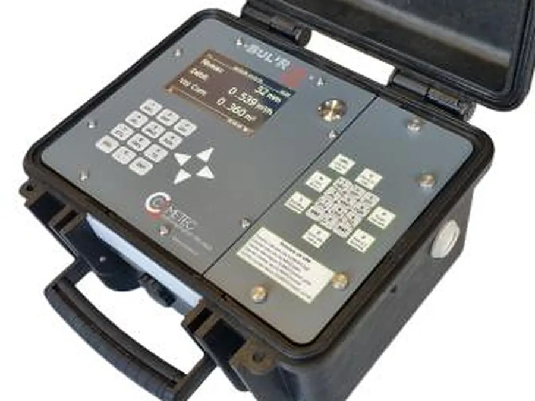

Débitmètres · Canal de comptage
BUL’R2Débitmètre portable bulle à bulle pour canal de comptage
Le débitmètre de campagne des canaux de comptage. Il calcule le débit à partir d’une mesure de niveau par bulle à bulle, enregistre et pilote le préleveur : l’outil des bilans 24 h et de la surveillance des réseaux.
- Niveau
- 1 m standard (5 ou 10 m)
- Précision
- 0,1 % de la gamme
- Mémoire
- 100 000 mesures
- Autonomie
- Jusqu’à 3 semaines
Idéal pour
- Bilans 24 h
- Déversoirs et venturis
- Asservissement de préleveur
- Surveillance des réseaux
- Stations d’épuration
LeasingDisponible à l’achat ou en leasing, par mensualités. Comment ça marche
Points forts
La mesure bulle à bulle : seul un tube est au contact de l’eau, la cellule de mesure reste à l’abri.
- Aucun contact de la celluleInsensible aux mousses et à la nature du liquide, pas d’encrassement de membrane.
- Générateur d’air intégréRéserve, régulation, filtre anti-poussière et purge automatique et manuelle.
- Enregistreur et préleveurFonction Bilan programmable et 2 relais pour asservir un préleveur.
- Plus de 30 lois H/QDéversoirs normalisés, formule ou table hauteur / débit en .csv.
- Données sans logicielFichier texte récupéré sur clé USB, exploitable dans un tableur.
- ÉvolutifEntrées 4-20 mA ou RS485 pour un capteur de niveau externe ou un capteur de vitesse Doppler.
Principe de mesure
Le générateur intégré pousse un très faible débit d’air dans un tube plongé dans l’écoulement. La pression nécessaire pour former une bulle à son extrémité est égale à la pression de la colonne d’eau : elle donne la hauteur d’eau, compensée en température.
En amont d’un déversoir, d’un seuil ou d’un venturi, la hauteur d’eau se convertit en débit par la loi hauteur / débit de l’ouvrage.
- Tube souple 4/6 mm jusqu’à 50 m, canne inox
- Vitesse de poursuite : 14 cm/min sur 10 m de tube
- Fonction limnimètre ou débitmètre
Applications
Un appareil portable pour tous les canaux où la relation hauteur / débit est connue.
- Bilans 24 hDébit enregistré et préleveur asservi au volume écoulé.
- Surveillance des réseauxCampagnes sur déversoirs et canaux de comptage.
- Stations d’épurationContrôle des débitmètres en place, mesures en entrée et en sortie.
- Hauteur-vitesseAvec un capteur Doppler BELUGA sur l’entrée RS485.
Caractéristiques
Valise autonome sur batterie ; options d’entrées pour d’autres capteurs.
| Principe | Pression hydrostatique par bulle à bulle, compensée en température |
|---|---|
| Gamme | 1 m en standard, 5 ou 10 m possibles |
| Précision | 0,1 % de la gamme ; 0,3 % sur la gamme de température |
| Température | − 20 à + 60 °C |
| Tube de bullage | Souple 4/6 mm, 50 m au maximum |
| Canne | Inox, 50 cm ou réglable 50 à 100 cm |
| Pression maximale | 1,9 bar |
| Boîtier | Valise polypropylène IP65, 300 × 210 × 270 mm, 6 kg |
|---|---|
| Afficheur | LCD couleur rétroéclairé, hauteur, débit, totalisation |
| Enregistreur | Pas de 5 s à 24 h, fonction Bilan, 100 000 mesures |
| Alimentation | Batterie interne 12 V, 7 Ah |
| Autonomie | 3 semaines au maximum à 5 min, sans option |
| Sorties | 2 relais programmables, commande de préleveur |
| Options | 1 ou 2 entrées 4-20 mA · entrée RS485 pour capteur Doppler · batterie externe |
| Loi hauteur / débit | Déversoirs normalisés, formule Q = k × Hⁿ, tables .csv |
Téléchargements
Questions fréquentes
Les questions que nous posent le plus souvent les exploitants et les bureaux d’études.
Le BUL’R2 est-il compatible avec l’application COMETEC ?
Oui : le module COMETEC Bilan ouvre ses enregistrements pour le diagnostic, la correction de la loi hauteur / débit et l’édition de rapports PDF et Excel.
Sur quels ouvrages peut-on l’utiliser ?
Sur tout canal équipé d’un organe déprimogène dont la loi hauteur / débit est connue : déversoir rectangulaire ou triangulaire, seuil, canal venturi, Palmer-Bowlus.
Peut-on le transformer en débitmètre hauteur-vitesse ?
Oui, avec l’option entrée RS485 et un capteur de vitesse Doppler BELUGA, pour les canaux sans organe déprimogène.
Quelle autonomie pour une campagne ?
Jusqu’à 3 semaines avec un enregistrement toutes les 5 minutes, sans option. Avec un capteur 2 fils 4-20 mA, environ 5 jours. Une batterie externe peut être raccordée.